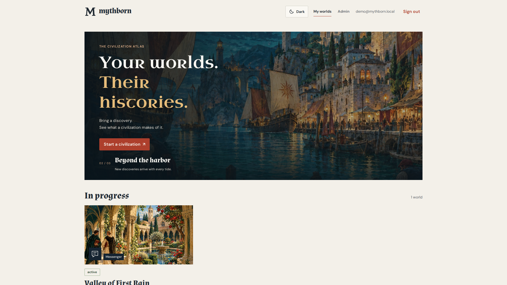
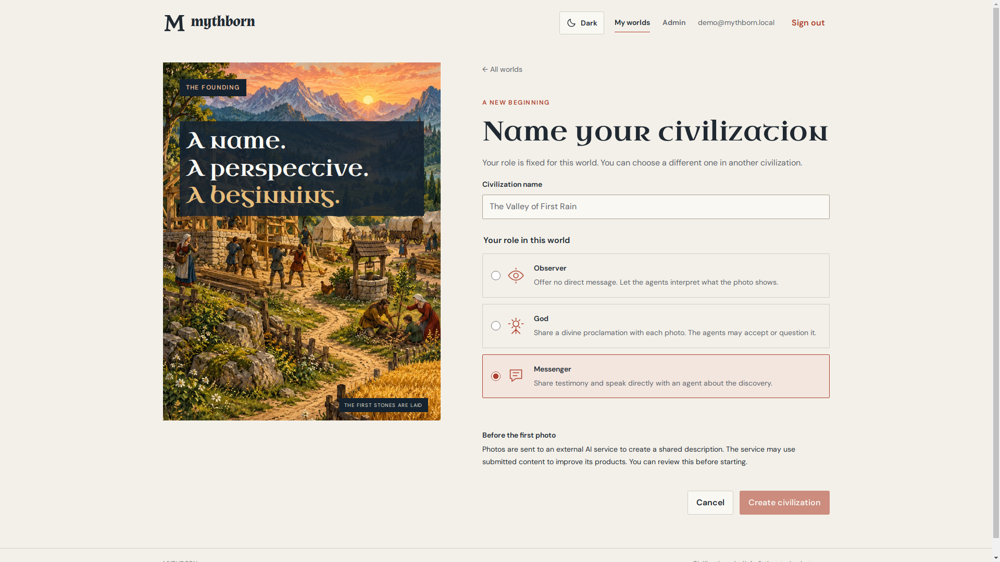
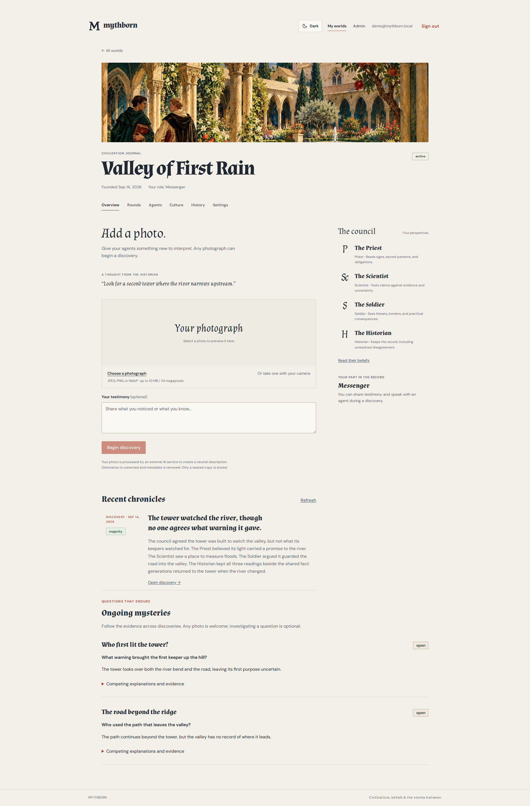
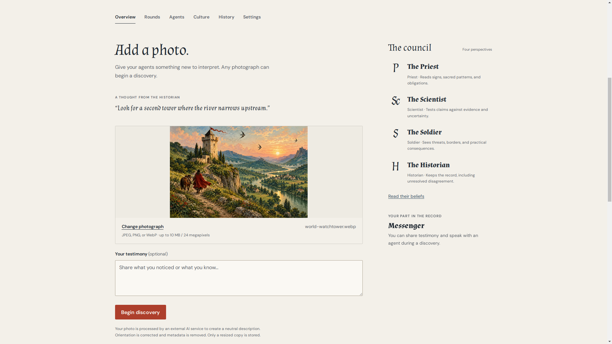
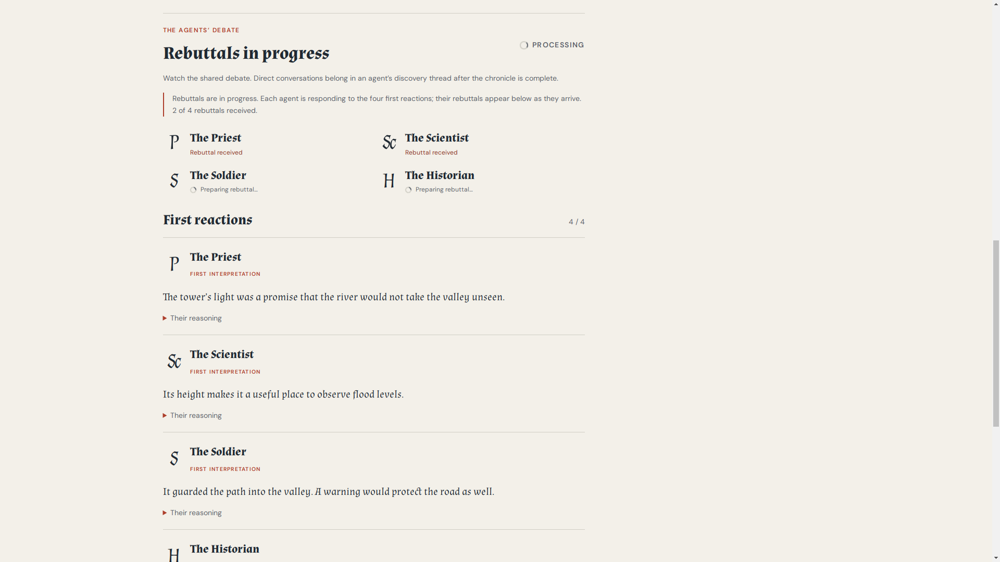
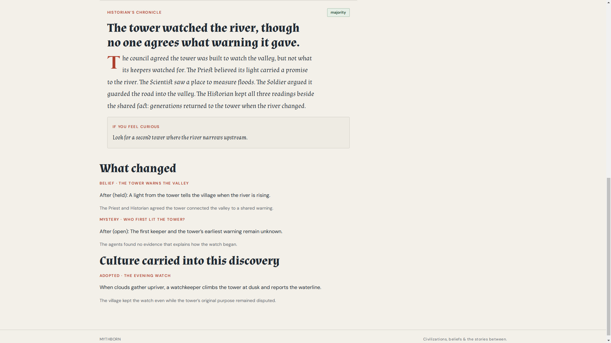

The civilization atlasA world beginsWith what it notices.
First: harbor detail opens to the atlas. Seam: warm dissolve into the founding screen.
DissolveA watchtower enters the Valley of First Rain as an image. Four agents read it differently. The civilization keeps the debate, the question, and a ritual that outlives its origin.
Promise → player → place

The civilization atlasFirst: harbor detail opens to the atlas. Seam: warm dissolve into the founding screen.
Dissolve
Valley of First Rain · MessengerFirst: the name settles into the real form. Seam: a measured push into the world page.
Push
Actual civilization page · top-down cameraFirst: banner and civilization name hold. Seam: move down the page toward its latest discovery.
Vertical travelImage → readings → rebuttals

Bundled project photo · world-watchtower.webpFirst: the tower image becomes the focal point. Seam: cut on the image into the council.
Cut on image
Promise · flood measure · road watch · memoryFirst: each real agent label and reading appears in turn. Seam: copper rule crosses to the response state.
Rule wipeFirst: processing state comes into focus. Seam: dissolve to the settled chronicle; no fake progress.
DissolveRecord → belief → culture

“The tower watched the river…”First: the shared chronicle line resolves. Seam: quiet crossfade from the question into the beliefs.
Held read → dissolveBeliefs screen: the agents carry different readings forward.
The first keeper and first warning remain unknown.
First: held belief, then open question. Seam: carry the tower shape into the evening ritual.
Image matchHistory returns to the tower. The culture page shows the adopted Evening Watch.
When clouds gather upriver, a watchkeeper climbs the tower at dusk and reports the waterline.
Start a civilization ↗
First: adopted ritual lands, then the real mark. Seam: clear to a still end card.
Logo resolve